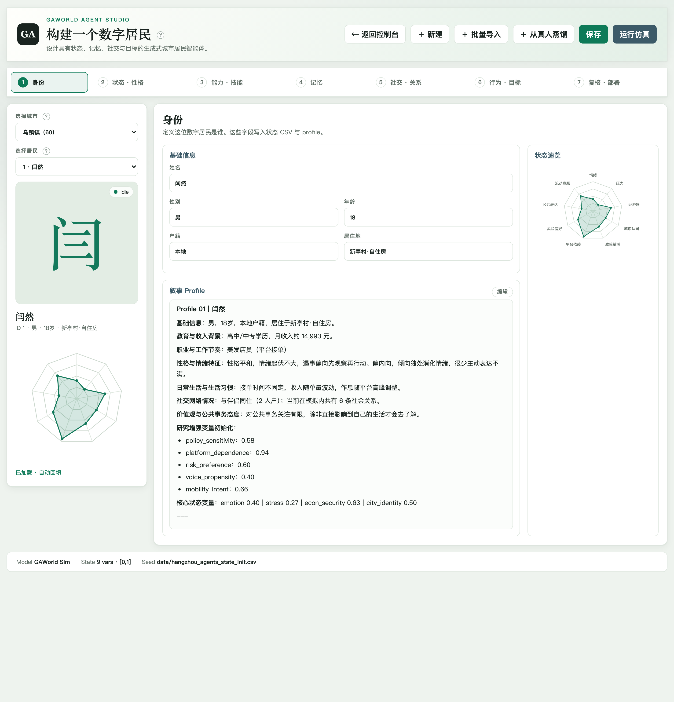

居民与 Agent Studio¶
GAWorld 中的居民包含身份、人格、状态、日程、记忆和社会关系。你可以从城市数据创建居民，也可以导入已有数据，并在运行后回查个体经历。
准备已有城市或当前世界，选择手动编辑、批量导入或从公开资料创建人物；修改完成后把居民加入一次短运行，查看其实际表现。
查看与编辑居民¶
在控制台确认当前世界和城市。
打开 Agent Studio，选择一位居民。
查看身份、状态与性格、技能、记忆、社会关系、行为目标和部署组织。
保存修改，在仿真页面选择该居民参与运行。
查看其他城市的居民时，先确认当前操作针对的城市与世界，再进行编辑。


Agent Studio 示例。左侧选择城市和居民，上方按身份、状态、技能、记忆等步骤编辑。 点击图片查看完整尺寸。¶
人物数据¶
内容 |
用途 |
|---|---|
身份与人物档案 |
描述姓名、年龄、职业与背景 |
状态变量 |
表示精力、压力等随运行变化的状态 |
大五人格 |
为行为和表达提供人格特征 |
日程与目标 |
组织活动安排和长期方向 |
家庭与社会关系 |
表示家庭责任、朋友与社交连接 |
记忆与经历 |
保存过去行动及其结果 |
技能 |
提供可复用的操作知识 |
批量导入¶
在 Agent Studio 选择 批量导入，上传 CSV、XLSX 或 JSONL 数据。检查字段映射、匿名化与扩容选项后导入，再抽查居民档案和初始状态。
导入前保留原始数据与字段说明，便于核对居民构成。
从公开资料创建人物¶
在 Agent Studio 点击 ＋ 从真人蒸馏，输入姓名或网址。系统检索资料并生成身份、状态、人格与思维框架。检查画像中的资料来源与证据强度，复核后选择 填入表单 继续编辑，或 直接部署为居民。
画像及来源保存在 output/personas/。详细字段见仓库的 真人蒸馏说明。
Python 数据接口¶
Agent 为居民字典提供属性访问，并与现有字典形式共享数据：
from gaworld.core.agent import Agent, view_as_agent
record = {"id": 31, "name": "居民 31", "state": {"energy": 0.8}}
agent = view_as_agent(record)
print(agent.id, agent.name, agent.need("energy"))
agent.state["energy"] = 0.7
print(record["state"]["energy"])
该示例展示数据访问。完整居民由城市输入与仿真初始化流程构建。
记忆与日程¶
运行后进入居民详情，查看状态、记忆与行动。记忆、日程和位置等数据保存在当前输出目录中；路径见 回放、分析与导出。
挂载技能¶
全局技能需要挂载到居民，私有技能按居民目录读取。文件格式和操作见 技能与真实工作。
访谈与群体比较¶
在 访谈与群体采访 中对居民提问，或跨城市选择受访者比较回答。群体采访支持个体居民与 cohort 群体智能体，结果分别保留受访者数量与代表人数。
完成后检查¶
保存后重新打开同一居民，核对身份、状态和技能；批量导入后抽查几位居民的字段。运行后在居民详情查看新产生的记忆和行动，确认当前世界与所编辑的居民一致。
以修改居民档案为例¶
在 Agent Studio 修改居民档案并保存后，residents.py 通过 world_paths 找到当前世界的输入文件并写回。重新打开该居民可检查保存结果；下一次启动时 agents_loader.py 读取输入形成运行对象。已经运行的居民对象、输入档案和持久记忆分别承担不同作用，修改初始档案后应在新运行中检查其效果。
代码结构与执行流程¶
模块分工¶
源码位置 |
职责 |
|---|---|
Agent Studio 的居民选择、详情展示与编辑交互。 |
|
读取并保存人物档案、状态、人格、记忆、目标等数据。 |
|
按请求中的当前世界解析居民文件和运行目录。 |
|
处理批量导入的预览、字段映射与导入任务。 |
|
根据检索资料生成身份、人格种子与思维框架。 |
|
在仿真初始化时加载居民输入。 |
|
提供 Agent 数据视图与属性访问。 |
执行流程¶
Agent Studio → dashboard_server → residents → 当前世界的居民文件
批量导入 → import_api → 字段处理与人口写入
仿真启动 → agents_loader → 居民运行数据
Studio 的编辑请求由控制台服务分发给 residents；该模块通过 world_paths 定位当前世界的副本。人物蒸馏由 persona_api.py 调用 gaworld/persona/，先保存画像及来源，再由部署操作写入居民输入。仿真加载这些输入后，按运行过程更新记忆与状态。
从哪里修改¶
调整表单查看 studio.js，调整字段读写查看 residents.py，调整 CSV、XLSX 或 JSONL 导入查看 import_api.py。增加居民初始化字段时，同时检查 agents_loader.py 与 Agent 的访问方式。